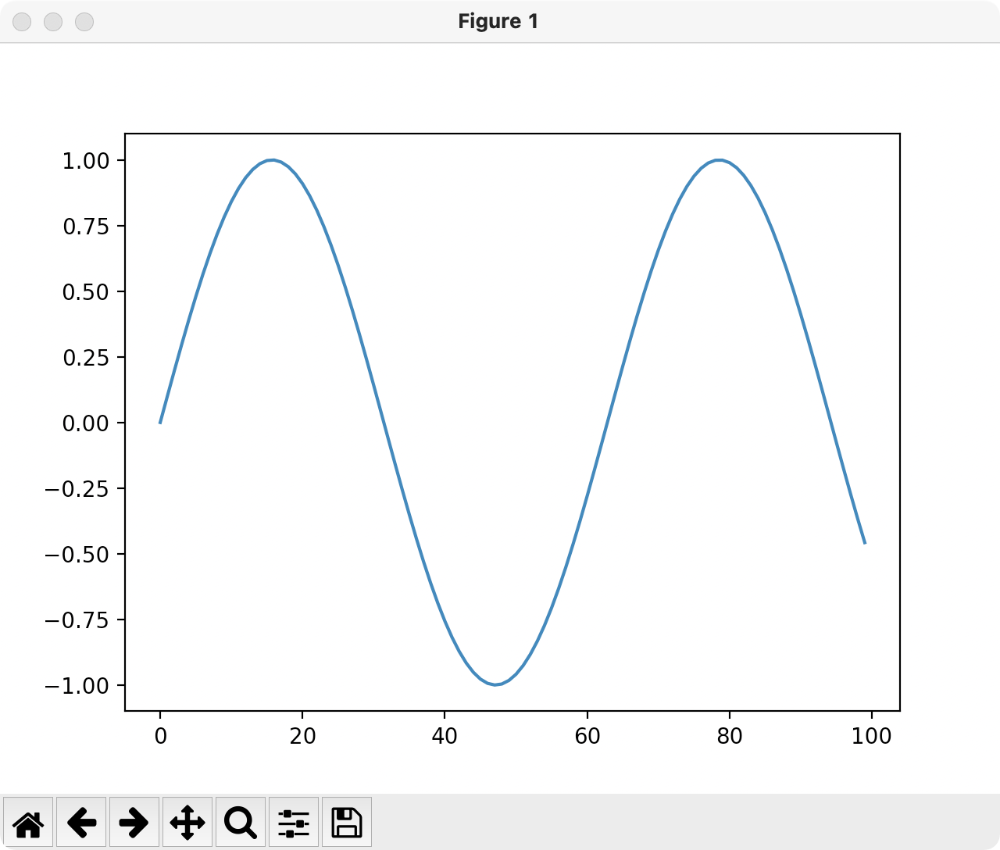
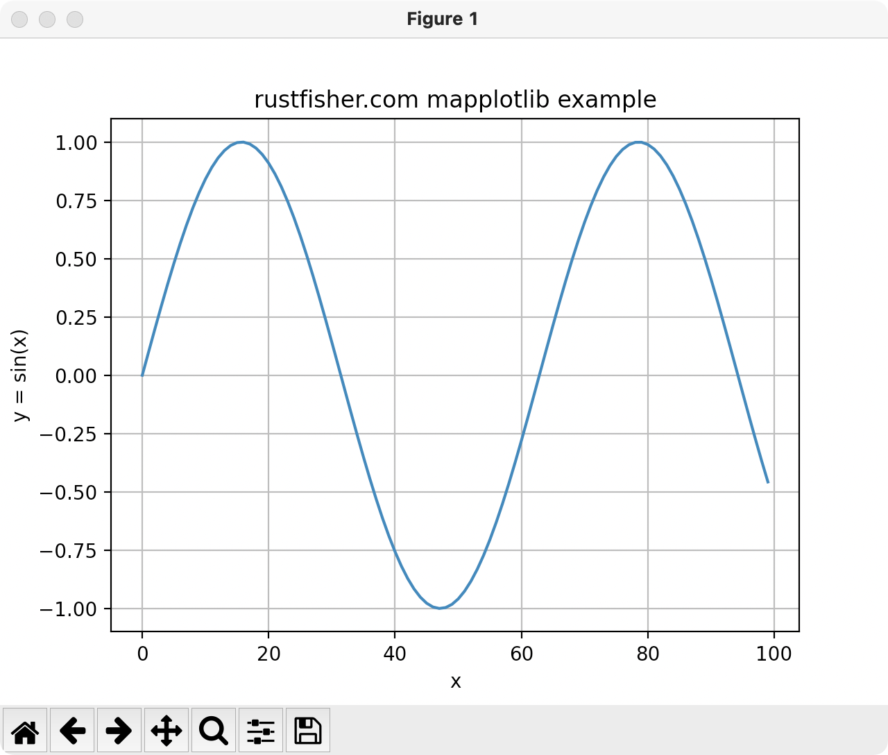
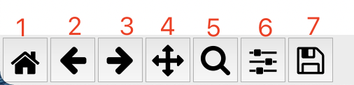

【运营的Python指南】绘制图表Matplotlib快速入门
本文最后更新于：2023年4月15日 下午
绘制图表是运营工作中常见的需求。前面我们试着用Python操作Excel来绘制图表，其实调用的是Excel里的图表功能。
接下来我们利用Matplotlib来绘制图表。
Matplotlib 是一个综合性的库。它是 Python 的可视化工具，可创建静态、带动画和可交互的图表
Matplotlib 官网 https://matplotlib.org/
官方使用手册 https://matplotlib.org/stable/users/index.html
安装
官方给出的安装方法是使用pip1
2python -m pip install -U pip
python -m pip install -U matplotlib
我们使用PyCharm，也可以先打1
import matplotlib.pyplot as plt
其中matplotlib下面有红线，跟着PyCharm的提示，把缺失的包装上就好。
简单例子-绘制折线图
接下来使用matplotlib绘制一个简单的折线图，先把这个库用起来。
准备数据
我们用math.sin来模拟。x从0到100，y=sin(x)。一个简单的sin函数。
绘制
准备数据，然后绘制出图表。完整代码如下1
2
3
4
5
6
7
8
9
10
11
12
13
14
15
16import math
import matplotlib.pyplot as plt
def demo1():
x_list = []
y_list = []
for i in range(0, 100):
x_list.append(i)
y_list.append(math.sin(i * 0.1))
plt.plot(x_list, y_list)
plt.show()
if __name__ == '__main__':
print('rustfisher 绘制折线图事例1')
demo1()
Mac的PyCharm运行下能得到这样的图

代码中
plt.plot(x_list, y_list)指定x，y值，都是列表。这2个列表的长度要相等。plt.show()是直接绘制图表。
可以看到图中缺少很多元素。图的标题没有指定，x轴和y轴都没有说明。
增加一些细节
为操作图表，我们需拿到图表对象ax = plt.gca()1
2
3
4
5ax = plt.gca()
ax.set_title('rustfisher.com mapplotlib example')
ax.set_xlabel('x')
ax.set_ylabel('y = sin(x)')
ax.grid()
set_title设置图表标题set_xlabel设置x轴名称set_ylabel设置y轴名称grid()显示格子
修改后的代码如下1
2
3
4
5
6
7
8
9
10
11
12
13def demo1():
x_list = []
y_list = []
for i in range(0, 100):
x_list.append(i)
y_list.append(math.sin(i * 0.1))
ax = plt.gca()
ax.set_title('rustfisher.com mapplotlib example')
ax.set_xlabel('x')
ax.set_ylabel('y = sin(x)')
ax.grid()
plt.plot(x_list, y_list)
plt.show()
运行结果

操作说明
从前面图中我们可以看到下面有一排按钮。这些按钮提供了一些操作图表的功能。
从左到右我们排个序1，2，3，4..

- 让图表恢复到初始状态
- 上一个图表状态
- 下一个图表状态
- 移动图表
- 缩放图表
- 调整图表显示的位置
- 点击缩放按钮后，鼠标按住左键去框选一个区域，松开左键后就是放大那个区域。
- 按住右键再框选，则是缩小显示区域。
- 保存图片
直接保存
如果我们想直接保存得到的图片，可以不调用show方法。而是调用savefig()方法。
1 | |
参考